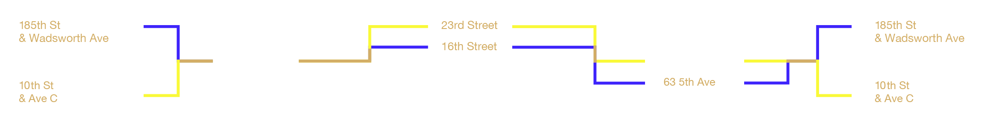

“Parallel Paths”
The connection between my grandfather’s everyday life in 1951 and my own, in 2018, is thematic but it is also somewhat geographical. At the beginning of the day, my grandfather and I would each commute, him from crosstown and myself from uptown. By the start of the workday, each one of us was located at the intersection of Fifth Avenue and 14th Street. At many points during the week, I would find myself making the walk up a few streets the The New School’s 6 E 16th Street building to work on a variety of projects in the arts: typeface design, design studies, and branding among other disciplines.
My grandfather describes his trip up a few blocks somewhat differently. At Bernard Joseph Inc., the outer-garment company for which he worked at age seventeen, garments were cut to size based on their pattern. Before cutting, however, the fabric needed to be sponged. For that to be accomplished, the 12-foot rolls of fabric needed to be loaded onto rolling carts and transported to their next destination. My grandfather describes loading up these carts and trekking along Fifth Avenue up to 23rd street where the sponging took place. Each of us traveling between these two stops created some sort of parallel pattern in our daily routines, generations apart.